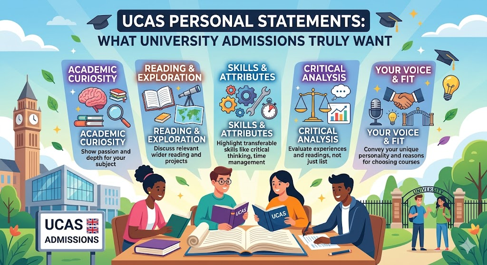

UCAS Personal Statements: What University Admissions Truly Want

"Personal Statement Writing" — Unifrog Webinar (pre-recorded) | Three UK university representatives discuss focus, authenticity, and the most common mistakes students make in UCAS applications.
Three university representatives from the United Kingdom came together for a Unifrog webinar to discuss one of the most consequential pieces of writing a school leaver will ever produce: the UCAS personal statement. This post captures the key takeaways — what admissions teams are really looking for, the pitfalls students consistently fall into, and the concrete resources available to counsellors and students through Unifrog.
Why the Personal Statement Matters More Than You Think
Most students and parents believe that university offers are driven almost entirely by grades. The research suggests otherwise — especially when applicants are equally qualified on paper.
According to Sutton Trust research on the "Access Gap" in UK Higher Education, applicants from state schools with identical grades to their privately educated peers are one third less likely to receive an offer from a leading university. The primary reason identified? The quality of their personal statement.
All statements analysed were written by students who went on to achieve the same A-level results. The differences in quality were attributed not to academic ability — but to the level of support and guidance each student received in writing their statement.
This finding has an important implication for counsellors at international and independent schools: the support we give students in crafting their personal statements is not a formality. It is a genuine equity lever — and one we can directly influence.
The Core Focus: It Has to Be About You
The webinar opened with a deceptively simple question: How do you focus on yourself in a personal statement? The most common mistake students make is writing about their subject — explaining what History is, or describing the plot of a novel they read — rather than writing about their own thinking, growth, and intellectual curiosity.
Admissions tutors read hundreds of statements. They already know what History is. What they want to know is:
- Why you are drawn to this subject
- What you have done — beyond the classroom — to pursue that interest
- How your thinking has evolved through what you have read, watched, or experienced
- What specific questions or problems in this field genuinely excite you
The personal statement is not a subject essay. It is an argument for why this particular person belongs on this course.
How to Sell Yourself — Authentically
The second theme of the webinar — how to sell yourself — makes many students uncomfortable. The word "sell" feels at odds with modesty and academic humility. But selling yourself in a personal statement does not mean boasting. It means being specific and confident about genuine strengths.
The difference between a weak and strong statement often comes down to this distinction:
| Weak Approach | Stronger Approach |
|---|---|
| "I have always been interested in Law." | "Reading about the landmark Donoghue v Stevenson case made me realise that law is where ethics and public consequence intersect — and that is the tension I want to spend my career exploring." |
| "I did work experience at a hospital." | "During my clinical observation placement, watching how surgeons communicated under pressure changed how I think about leadership in high-stakes environments." |
| "I am a hard-working student." | "Balancing the IB Extended Essay with my role as team captain taught me to make decisions about time under genuine pressure — not hypothetical pressure." |
Specificity is what makes a statement feel real. Generic praise of a subject signals that the student lacks authentic engagement. Specific moments, questions, and realisations signal genuine intellectual character.
Common Pitfalls to Avoid
The university representatives were candid about patterns they see repeatedly that weaken otherwise capable applications:
- The opening cliché — Starting with a famous quote, a childhood memory that leads to nothing, or the phrase "Since I was young, I have always been passionate about…" The opening line must immediately signal someone who thinks and writes with confidence.
- Listing activities without reflection — Telling the reader what you did is less interesting than what you thought, felt, or changed as a result of doing it.
- Too much focus on extracurriculars — For most UK universities, academic engagement should be the dominant theme. Extracurriculars support that story; they do not replace it.
- Hedging and qualifying every claim — Statements full of "I think," "perhaps," and "I hope to learn" undermine confidence. Be direct.
- Writing for the counsellor, not the admissions tutor — Some statements read like they were polished for approval rather than written with genuine voice. Authenticity is not optional — it is the point.
The Unifrog Personal Statement Tool
Unifrog has a dedicated personal statement module built directly into the platform. Students can compose their statement in two ways:
- One-shot composition — Writing the full statement as a single continuous draft
- Three-section structure — Breaking it into subject engagement, wider activities, and future ambitions — useful for students who find a blank page overwhelming
A large library of reviewed example statements is also available within Unifrog, covering subjects from Physics to Industrial Design to Business Studies. These are invaluable reference points — both for students drafting their own statements and for counsellors who want to calibrate what "good" looks like across different disciplines.
Key Resources for Students and Counsellors
| Resource | Audience |
|---|---|
| How to Write Your Personal Statement Like a Boss | Students — Unifrog Know-how Library |
| Avoiding Application Essay Fatal Flaws | Students — Unifrog Know-how Library |
| Giving Feedback on Personal Statements | Counsellors & Teachers — Unifrog Know-how Library |
| Example statements: Physics, History, Business, Design | Students — Unifrog Know-how Library |
Conclusion
The UCAS personal statement is one of the few parts of a university application that a student can directly and substantially improve through effort and good guidance. Grades are what they are by the time applications go in. The personal statement is still being written.
As counsellors, the opportunity — and the responsibility — is to start this process early, build genuine engagement before the writing begins, and give honest, specific feedback that helps students find and trust their own voice.
"The best personal statements do not describe a student who will be a good fit for a course. They introduce a person whose curiosity already belongs there."
Reference: "Personal Statement Writing" | Unifrog Webinar (pre-recorded) | Three UK University Representatives